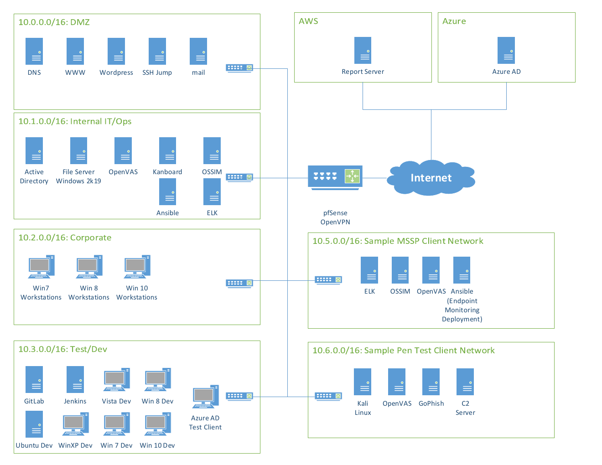

Scenario and scope
The scenario placed our team in the role of internal security analysts at Brick Wall Cyber, a fictional firm offering managed security and penetration-testing services. Leadership wanted to understand three areas of exposure: Internet-facing systems, systems storing client data, and systems used to access client environments.
We were given a network diagram and system inventory rather than direct access to the environment. That made this a vulnerability assessment based on documented software, versions, services, and network placement. Each team member was responsible for four candidate vulnerabilities plus part of the risk analysis and written report.

Environment analyzed
The 10.0.0.0/16 DMZ was the main focus because its hosts were reachable from the Internet through pfSense. The inventory documented the following public-facing systems:
| Host | Address | Documented stack | Exposed ports |
|---|---|---|---|
| DNS | 10.0.0.2 | CentOS 6.9, ISC BIND 9.12 | 53 |
| WWW | 10.0.0.5 | Windows Server 2012, IIS 5.0 | 80, 443 |
| WordPress | 10.0.0.9 | Ubuntu 18.04, Docker CE 18.04, WordPress 5.2.2, MariaDB 5.5.50 | 80, 443, 3306 |
| SSH jump host | 10.0.0.22 | Ubuntu 18.04, OpenSSH 7.9 | 22 |
| 10.0.0.4 | Ubuntu 18.04, Dovecot 2.2.36.3, Sendmail 8.13.0, SquirrelMail 1.4.17 | 25, 80, 143, 443, 993 |
The inventory also documented legacy SSL/TLS support, externally exposed database traffic on port 3306, DNS zone transfers, and six-character minimum email passwords.
My documented contribution
The team’s responsibility table assigned me the STRIDE threat model in section 2.a.2, one key finding, one key recommendation, four vulnerability entries, and one to two paragraphs of the executive summary. My section of the report focused on the WordPress host and the wider risk created by legacy systems.
- Mapped six STRIDE threat categories to practical mitigations and business importance.
- Researched four candidate CVEs and recorded CVSS, likelihood, impact, affected host, overall risk, and remediation priority.
- Contributed the finding that legacy operating systems and outdated components increased exposure across the environment.
- Recommended replacing unsupported platforms and establishing policies that keep systems on supported versions.
- Helped translate the technical findings into an executive-level summary and response plan.
Threat model
I used STRIDE to avoid treating vulnerability research as only a list of CVEs. The model connected technical attack categories to controls Brick Wall Cyber could apply across the environment.
| Threat | High-level mitigation | Importance |
|---|---|---|
| Spoofing | MFA, digital certificates, strong password policies | High |
| Tampering | Encryption and hashing | High |
| Repudiation | Logging, monitoring, audit trails, tamper-resistant logs | Medium |
| Information disclosure | Encryption at rest and in transit, strict access controls, least privilege | High |
| Denial of service | Rate limiting, CDN, DDoS protection | Medium |
| Elevation of privilege | Role-based access control, least privilege, privilege audits | High |
Assessment method
- Establish asset context. I used the supplied subnet diagram and inventory to identify Internet exposure, operating systems, application versions, and business purpose.
- Research candidate vulnerabilities. I compared documented components with entries in the National Vulnerability Database and recorded the relevant CVSS score and technical effect.
- Add business context. CVSS alone did not determine our response. We separately judged likelihood and impact, then used the project’s risk matrix to assign Low, Medium, High, or Critical risk.
- Prioritize remediation. Findings were placed into Immediate, Short-term, Long-term, or Eventual categories based on business impact, exploitation potential, data exposure, and security practice.
- Aggregate patterns. The team grouped individual findings into broader issues so the response plan could address root causes rather than twelve isolated CVE records.
My vulnerability research
My four-entry block assessed candidate vulnerabilities against the WordPress host. The table below preserves the ratings in the submitted report while also stating the evidence limitation for each match.
| Candidate | Report rating | What the research found | Evidence check |
|---|---|---|---|
| CVE-2020-25213 | 9.8 Critical Immediate |
Unauthenticated PHP upload and execution in the WordPress File Manager plugin before 6.9. | Relevant only if the host used this plugin; the supplied inventory did not list plugins. |
| CVE-2021-24141 | 7.2 High Immediate |
SQL injection in Advanced Database Cleaner before 3.0.2, requiring a high-privilege WordPress user. | Relevant only if that plugin was installed; it was not identified in the inventory. |
| CVE-2019-10972 | 5.5 Medium Long-term |
Denial of service in Mitsubishi Electric FR Configurator2 through a crafted project file. | The described product does not match the documented WordPress stack. |
| CVE-2020-10663 | 7.5 High Immediate |
Unsafe object creation in the Ruby JSON gem through version 2.2.0. | The inventory did not document Ruby or the affected gem on this host. |
Results and recommendations
The team documented twelve candidate vulnerabilities with CVSS scores from 4.3 to 9.8. Seven were placed in the Immediate category, three in Short-term, and two in Long-term. We identified three recurring problems: unpatched software, inadequate network security controls, and outdated components or legacy operating systems.
The response plan recommended a formal patch-management process, supported operating systems, TLS 1.2 or newer, removal of SSL and older TLS versions, MFA for critical services, network segmentation, IDS/IPS coverage, and routine log monitoring. For unsupported systems, the report recommended migrating CentOS 6.9 and Windows Server 2012 rather than relying on patches that would no longer arrive.
What I learned
This project taught me how asset context changes vulnerability priority. A high CVSS score matters, but Internet exposure, business purpose, likelihood, and the data a system can reach determine how urgently the organization should respond.
It also showed me why component validation is necessary. Two entries in my submitted block were weak matches to the documented WordPress stack, and the two plugin findings still required confirmation that those plugins were installed. If I repeated the assessment, I would require a component/version evidence record for every CVE and label unverified matches as candidates rather than confirmed vulnerabilities. That is the biggest improvement I would make to the original work.